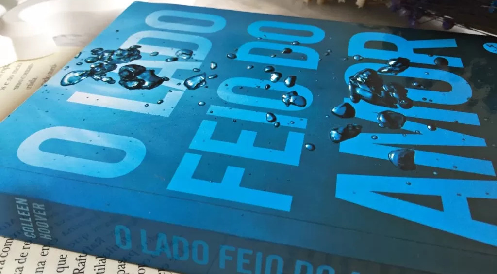

O Lado Feio do Amor - Colleen Hoover
14 de Abril de 2025 10:11 Essa vai ser polêmica! Esse livro é intitulado pelos fãs como "O pior livro da Colleen", e ao meu ver, eles não estão totalmente errados.
Antes de mais nada, vamos à sinopse: Tate Collins (nome questionável) se muda para o apartamento do irmão, e lá ela encontra um amigo dele, Miles Archer. Os dois ficam relutantes em aceitar que se gostam, mas Miles deixa claro que não está interessado em amor, e desde o início impõe duas regras: sem perguntas sobre o passado e sem expectativas de futuro (um completo babaca). Tate aceita o acordo acreditando que vai apenas se divertir e sair com o cara sem se apaixonar. Mas é claro que ela não resiste, então precisa decidir até onde está disposta a ir por alguém que não acredita mais no amor.
"O amor nem sempre é bonito. Às vezes você passa o tempo inteiro desejando que um dia ele mude. Que melhore. E aí, antes que perceba, você já voltou para a estaca zero e perdeu o seu coração em algum lugar no meio do caminho."
Achei o enredo meio fraco, mas tudo bem. Agora vem o motivo de eu ter dado apenas 3 estrelas:
Todos os personagens tem atitudes um tanto quanto duvidosas, na história eles são adultos, mas eu senti que eles ainda eram muito imaturos. Tate fica com um fogo no rabo por esse menino que chega ser irritante. Ele ainda diz que não quer nada além de satisfazer seus desejos pessoais, (Esse cara é um escroto!) mas ainda assim ela insistia em ir atrás dele. Igual mulher de malandro. E os dois permanecem nessa ladainha o tempo todo, não trazendo nenhum conflito relevante para a história.
Outra coisa que irrita é o fato da personagem principal nunca conseguir um momento de paz em casa. O irmão mais novo faz questão de lotar a casa de homem para assitir jogo — e o curioso é que isso acontece quase todos os dias. A casa virou ponto de encontro. Porém não podemos reclamar muito já que a casa na verdade é do irmão. Mas ela só queria estudar, e precisou sair de casa para isso. É o fim da carreira mesmo.
Então, por esses motivos entendo o fato dos fãs considerarem o livro mais fraco que a autora já escreveu. Eu entendi a mensagem que o livro procurou transmitir de que o amor nem sempre é leve ou bonito, e que as vezes ele é marcado por cicatrizes profundas, mas não foi o que ele passou para mim. Ao meu ver, esse livro só retratou a escrotice que existe dentro dentro de muitos homens, e reforçou a ideia arcaica e machista de submissão feminina.